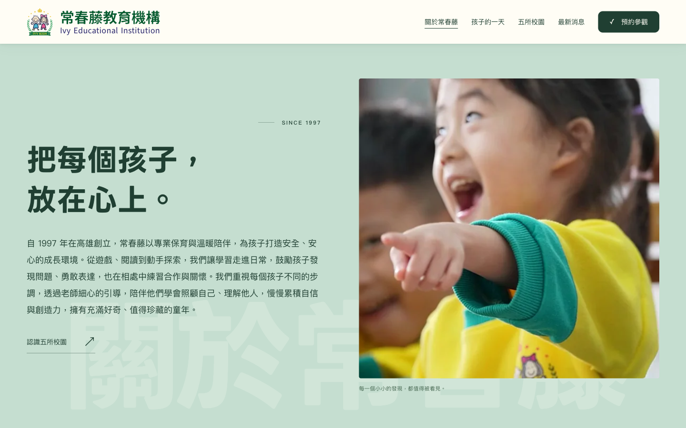
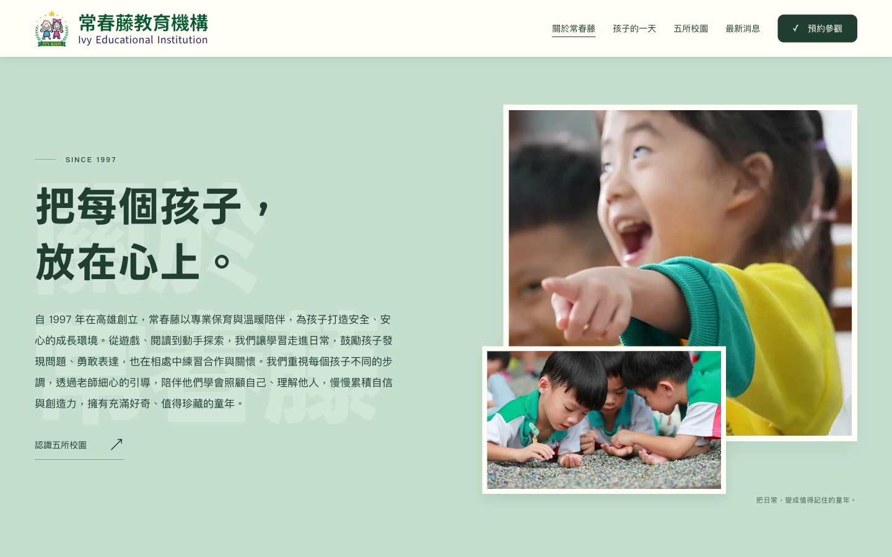
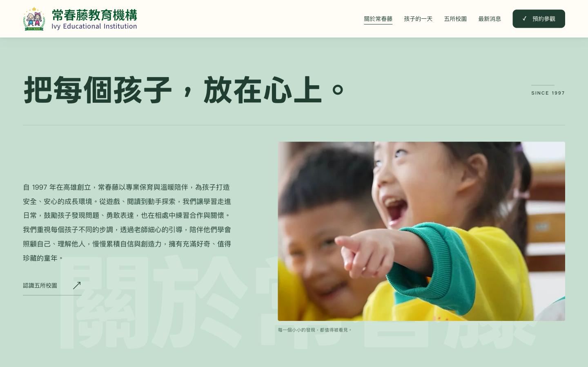

IVY EDUCATION · B SERIES
從 B 版出發，再看三種可能。
以 B 版左文右圖延伸，增加主文內容，保留 SINCE 1997，移除主標上方的中文小標。三版正文相同，皆維持單一段落。

B1 / 經典雙欄
延續左右雙欄，文字與大幅方形照片平衡配置，最貼近原 B 版。

B2 / 錯落雙照片
主照片搭配日常小照片，形成相簿般的層次，畫面較活潑。

B3 / 橫向大標
主標橫跨整個版面，下方再分為文案與照片，閱讀順序更鮮明。
點選任一版即可實際捲動。三版保留滿版淡綠背景與固定的「關於常春藤」背景大字；手機自動重排。